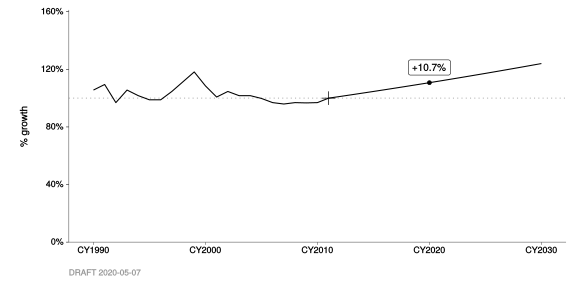
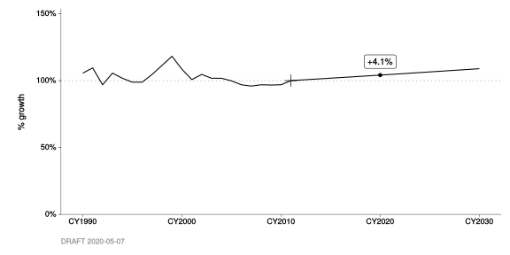

A Advanced Usage
A.1 Calculating county fractions from raw growth profile data
In the chapter on Growth profiles, things ended with a look at “raw” county-specific growth profile data for BY2011 category #761 “Sanitary Sewers”. And, we could see that the raw data looked a lot like population counts.
This means that we can double-check the BY2011 county fractions, stored in file t1325, against fractions that we compute right here using the raw growth profile data.
Sanitary Sewers example
Let’s try this with our “Sanitary Sewers” example (which was linked to growth profile #657).
#
# Double-check the crosswalk. Category #761 "Sanitary Sewers" should be
# associated with growth profile #657 "Household Population".
#
BY(2011) %>%
DB_growth_profile_crosswalk() %>%
filter_categories(
"Sanitary Sewers" = 761) %>%
ensure(
.$gpf_id == 657)| cat_id | cat_h0 | gpf_id | backcast | forecast | category |
|---|---|---|---|---|---|
| 761 | Area Source | 657 | TRUE | TRUE | Sanitary Sewers |
#
# Compute county fractions from the raw growth profile data.
#
# - Extract just the CY2011 values.
# - Create a new column `cnty_frac`.
#
BY2011_raw_growth_profile_data %>%
filter(
gpf_id == 657) %>%
filter_years(
CY(2011)) %>%
mutate(
cnty_frac = gf_qty / total(gf_qty))| gpf_from | gpf_id | year | gf_qty | cnty_abbr | gpf_name | gpf_staff | gpf_date | cnty_frac |
|---|---|---|---|---|---|---|---|---|
| t0336 | 657 | CY2011 | 1535560 | ALA | Household Population | Minh H Nguyen | 2010-02-25 | 0.21690 |
| t0336 | 657 | CY2011 | 1086820 | CC | Household Population | Minh H Nguyen | 2010-02-25 | 0.15351 |
| t0336 | 657 | CY2011 | 245700 | MAR | Household Population | Minh H Nguyen | 2010-02-25 | 0.03471 |
| t0336 | 657 | CY2011 | 134080 | NAP | Household Population | Minh H Nguyen | 2010-02-25 | 0.01894 |
| t0336 | 657 | CY2011 | 794560 | SF | Household Population | Minh H Nguyen | 2010-02-25 | 0.11223 |
| t0336 | 657 | CY2011 | 728160 | SM | Household Population | Minh H Nguyen | 2010-02-25 | 0.10285 |
| t0336 | 657 | CY2011 | 1815700 | SNC | Household Population | Minh H Nguyen | 2010-02-25 | 0.25647 |
| t0336 | 657 | CY2011 | 309080 | SOL | Household Population | Minh H Nguyen | 2010-02-25 | 0.04366 |
| t0336 | 657 | CY2011 | 429960 | SON | Household Population | Minh H Nguyen | 2010-02-25 | 0.06073 |
In the new cnty_frac column, we can see percentages of 21.7%, 15.4%, 3.5%, 1.9%, 11.2%, 10.3%, 25.6%, 4.4%, and 6.1%, respectively.
County fractions pulled from DataBank
Now, let’s compare those to what’s stored in DataBank as “published” (file t1325, accessed via DB_county_fractions()).
#
# Pull the "published" county fractions for BY2011 (stored in `t1325`).
#
BY(2011) %>%
DB_county_fractions(
verbose = TRUE) %>%
filter(
cat_id == 761)| year | cat_id | cnty_abbr | cnty_frac |
|---|---|---|---|
| BY2011 | 761 | ALA | 0.21852 |
| BY2011 | 761 | CC | 0.13318 |
| BY2011 | 761 | MAR | 0.04017 |
| BY2011 | 761 | NAP | 0.01886 |
| BY2011 | 761 | SF | 0.12983 |
| BY2011 | 761 | SM | 0.10970 |
| BY2011 | 761 | SNC | 0.25609 |
| BY2011 | 761 | SOL | 0.03944 |
| BY2011 | 761 | SON | 0.05422 |
We can see some mismatches, but there could be good reasons for them. This is just intended to show you how you can do the double-checking.
B Special Cases
B.1 Changes in forecasts for category #283
You might have noticed that the throughput forecast, for category #283, doesn’t follow the same trajectory as the NOx forecast.
This is not because NOx emission factors were projected to increase after CY2011. Here’s what happened:
- The BY2011 criteria-pollutant calculations were completed.
- The growth profile for this category, in DataBank, was updated.
- The BY2011 GHG calculations were completed.
Here are some basic exercises (and charts) that may shed some light.
#
# This is the growth in NOx emissions from BY2011 category #283, via the
# published inventory (`BY2011_annual_emission_data`).
#
BY2011_annual_emission_data %>%
filter_categories(
283) %>%
filter_pollutants(
"NOx") %>%
chart_annual_growth(
base_year = CY(2011),
flag_years = CY(2020)) 
#
# This is the growth profile assigned to category #283 via file `t1325`.
# It's not consistent with the published emission forecast (above).
#
BY2011_growth_profile_data %>%
filter_categories(
283) %>%
chart_annual_growth(
base_year = CY(2011),
flag_years = CY(2020)) 
#
# This is the growth in emissions, via the reproduced inventory. It's consistent
# with the assigned growth profile, but not with the published forecast.
#
BY2011_area_source_projection_data %>%
filter_categories(
283) %>%
filter_pollutants(
"NOx") %>%
chart_annual_growth(
qty_var = "ems_qty",
base_year = CY(2011),
flag_years = CY(2020)) 
#
# This is the growth in throughputs, via the reproduced inventory. It's also
# consistent with the assigned growth profile, and with the reproduced
# emissions, but not with the published forecast.
#
BY2011_area_source_throughput_data %>%
filter_categories(
283) %>%
chart_annual_growth(
qty_var = "tput_qty", # changed from "ems_qty" to "tput_qty"
base_year = CY(2011),
flag_years = CY(2020)) 
If it still doesn’t make sense, please feel free to raise a question at one of our meetings!
C Technical Documentation
C.1 Control factors
Documentation for three key functions is printed out below.
DB_control_factors()is a legacy-format API for DataBank (t0326). In its output,Cd,Ed, andEpare key. Seehelp(t0326)as well.annualize_DB_control_factors(), which itself depends oncalculate_Fd_and_Fc(), implements the annualization algorithm mentioned in the chapter on Control factors. The References section ofhelp(calculate_Fd_and_Fc)contains a reference to a PDF that describes the algorithm in several pages.
## No documentation for 'DB_control_factors' in specified packages and libraries## No documentation for 'annualize_DB_control_factors' in specified packages and libraries## No documentation for 'calculate_Fd_and_Fc' in specified packages and libraries